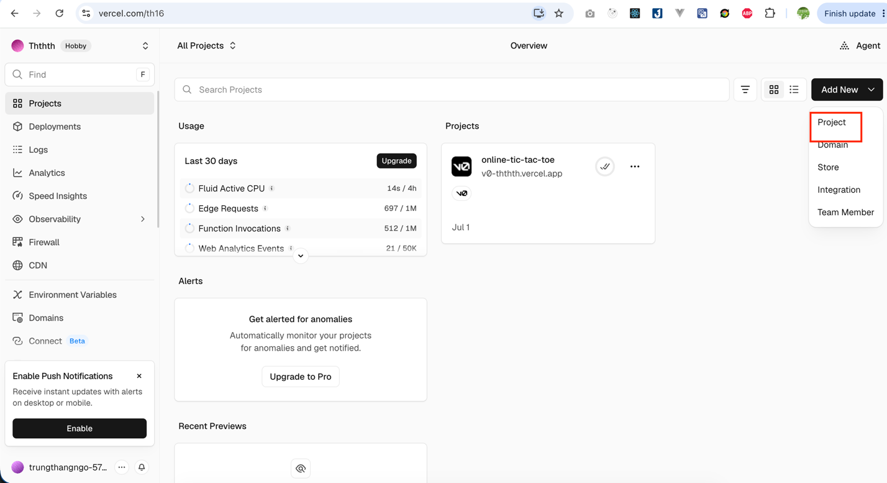
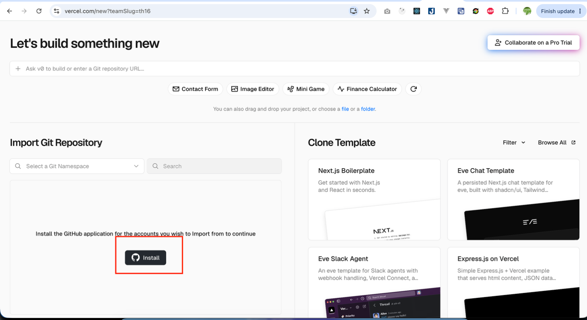
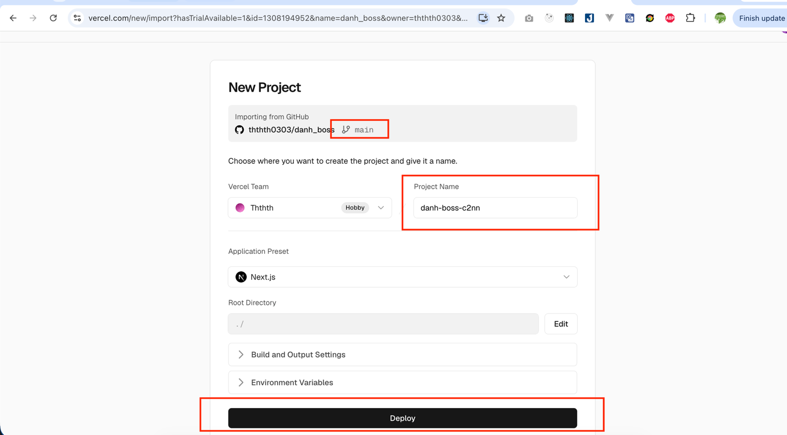
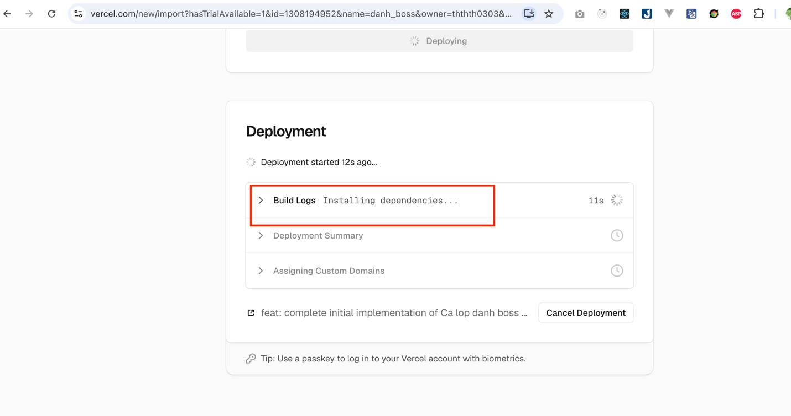
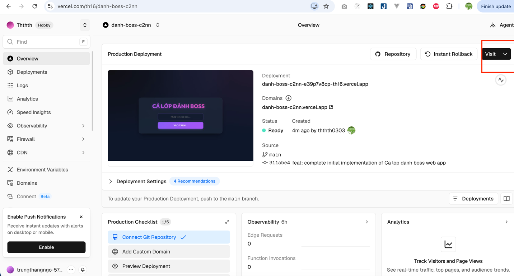

<!--
  Slide fragment cho Buổi 15 — MODULE M4: Nền tảng Lập trình & Hạ tầng.
  Buổi 15: Xây dựng và deploy web động — Phân loại web tĩnh/động, thành phần web động, và TRỌNG TÂM: thực hành deploy WEB ĐỘNG.
  Web tĩnh (GitHub Pages) đã làm ở buổi 14 → ở đây chỉ nhắc nhanh, dồn thời lượng cho web động + hosting động (Vercel/Render/Railway/Heroku/Hostinger).
  Format fragment: cấu hình Sổ Tay + CSS riêng + các <section class="slide">.
  Chrome do frontend/templates/lesson.html cung cấp. Xưng "em", "GV". Navigation chạy theo thứ tự DOM.
  Trục kể chuyện (5 màn): Phân loại tĩnh/động → Thành phần web động → Triển khai (tĩnh nhắc nhanh / động dùng hosting) → Thực hành deploy web động → Khép lại.
  Nối buổi: repo + Pages (buổi 14, web tĩnh); Environment Variable dẫn sang An toàn thông tin (buổi 16).
-->

<script type="application/json" id="nb-questions">
{
  "1": {"title": "SỔ TAY #1 — Đầu buổi", "q": "Trong game online, vì sao nhiều người ở máy khác nhau vẫn cùng nhìn thấy 1 con boss và cùng đánh nó? Theo em, phần nào phải chạy chung ở phía server?"},
  "2": {"title": "SỔ TAY #2 — Sau thực hành", "q": "Game đánh boss em vừa deploy có gì? Link Vercel của em là gì? Phần nào là frontend, phần nào là backend, và backend đang giữ trạng thái chung nào?"},
  "3": {"title": "SỔ TAY #3 — Cuối buổi", "q": "Web tĩnh (buổi 14) và web động (hôm nay) khác nhau ở đâu, và mỗi loại em nên deploy ở đâu?"}
}
</script>

<style>
  /* BUỔI 15 — Local styles (Module M4) */
  .slide-body .qbox,
  .slide-body .steps,
  .slide-body .prompt-box,
  .slide-body .hl-box,
  .slide-body .cl-container {
    width: 100%;
    max-width: none;
  }
  .slide { justify-content: flex-start; }
  .slide-body { margin-top: auto; margin-bottom: auto; }
  /* Steps: cho chữ chảy inline bình thường (tránh mỗi <strong>/<code> thành 1 ô flex riêng làm vỡ layout) */
  .slide-body .steps li { display: block; padding-left: 3.6rem; }
  .slide-body .steps li::before { position: absolute; left: 1.1rem; top: 0.8rem; margin-right: 0; }
  .shot-grid {
    display: grid;
    grid-template-columns: repeat(2, minmax(0, 1fr));
    gap: 16px;
    margin-top: 18px;
  }
  .shot-card {
    background: rgba(255,255,255,0.9);
    border: 1px solid rgba(148,163,184,0.35);
    border-radius: 18px;
    overflow: hidden;
    box-shadow: 0 10px 30px rgba(15,23,42,0.08);
  }
  .shot-card img {
    display: block;
    width: 100%;
    height: auto;
    background: #fff;
  }
  .shot-cap {
    padding: 12px 14px 14px;
    font-size: 0.92rem;
    line-height: 1.45;
    color: var(--text);
  }
  @media (max-width: 900px) {
    .shot-grid { grid-template-columns: 1fr; }
  }
  .arch-diagram {
    margin-top: 18px;
    padding: 18px;
    border-radius: 24px;
    background: linear-gradient(135deg, rgba(37,99,235,0.08), rgba(6,182,212,0.08));
    border: 1px solid rgba(37,99,235,0.18);
  }
  .arch-flow {
    display: grid;
    grid-template-columns: 1fr auto 1fr auto 1fr;
    gap: 14px;
    align-items: center;
  }
  .arch-node {
    background: #fff;
    border: 1px solid rgba(148,163,184,0.3);
    border-radius: 22px;
    padding: 18px 16px;
    box-shadow: 0 12px 28px rgba(15,23,42,0.08);
    text-align: center;
  }
  .arch-emoji {
    font-size: 2rem;
    line-height: 1;
    margin-bottom: 10px;
  }
  .arch-title {
    font-size: 1.05rem;
    font-weight: 800;
    color: var(--text);
    margin-bottom: 4px;
  }
  .arch-sub {
    font-size: 0.86rem;
    color: var(--text-dim);
    margin-bottom: 8px;
  }
  .arch-desc {
    font-size: 0.86rem;
    color: var(--text);
    line-height: 1.45;
  }
  .arch-arrow {
    font-size: 2rem;
    color: var(--primary);
    font-weight: 900;
  }
  .arch-note {
    margin-top: 14px;
    display: grid;
    grid-template-columns: repeat(3, minmax(0, 1fr));
    gap: 12px;
  }
  .arch-chip {
    background: rgba(255,255,255,0.85);
    border: 1px solid rgba(148,163,184,0.25);
    border-radius: 16px;
    padding: 10px 12px;
    font-size: 0.84rem;
    color: var(--text);
  }
  @media (max-width: 980px) {
    .arch-flow {
      grid-template-columns: 1fr;
    }
    .arch-arrow {
      transform: rotate(90deg);
      justify-self: center;
    }
    .arch-note {
      grid-template-columns: 1fr;
    }
  }
</style>

<!-- ============ MỞ ĐẦU ============ -->

<!-- 1 -->
<section class="slide active slide-cover" data-slide="1" data-title="Chào mừng">
  <div class="cover-orb orb-1" style="background:#059669;"></div>
  <div class="cover-orb orb-2" style="background:#3B82F6;"></div>
  <div class="cover-orb orb-3"></div>
  <div class="cover-content slide-body">
    <span class="eyebrow">BUỔI 15 · MODULE 4 — NỀN TẢNG LẬP TRÌNH & HẠ TẦNG</span>
    <h1 class="hero-title">Xây dựng và triển khai <span class="grad-text">website động</span></h1>
    <p class="slide-subtitle">Buổi 14 em đã có web <strong>tĩnh</strong> trên GitHub Pages. Hôm nay em sẽ học cách tạo 1 sản phẩm có <strong>frontend + backend</strong>,
      hiểu vì sao backend có giá trị khi nhiều người cùng tương tác, rồi tự tay deploy website động đó lên <strong>Vercel</strong>.</p>
    <div class="cover-chips"><span class="cover-chip">120 phút</span><span class="cover-chip">Website động</span><span class="cover-chip">Deploy Vercel</span></div>
  </div>
</section>

<!-- 2 -->
<section class="slide" data-slide="2" data-title="Lộ trình hôm nay">
  <div class="slide-body">
    <span class="eyebrow">BẢN ĐỒ BUỔI HỌC</span>
    <h2 class="slide-title">Lộ trình hôm nay</h2>
    <p class="slide-subtitle">Từ câu hỏi "vì sao cần backend?" đến lúc tự tay xây và triển khai 1 website động chạy thật trên internet.</p>
    <ol class="steps stagger">
      <li><strong>Mở vấn đề:</strong> vì sao nhiều người có thể cùng nhìn thấy 1 con boss và cùng đánh nó?</li>
      <li><strong>Hiểu kiến trúc:</strong> phân biệt web tĩnh và website động; hiểu mô hình phổ biến <strong>Frontend + Backend + Database</strong>.</li>
      <li><strong>Xây sản phẩm:</strong> vibe-code 1 website động mẫu <strong>"Cả lớp đánh boss"</strong> bằng Next.js + API route.</li>
      <li><strong>Triển khai thật:</strong> đẩy code lên GitHub, import vào <strong>Vercel</strong>, lấy link sống để cả lớp cùng vào chơi.</li>
    </ol>
    <div class="hl-box info"><span class="hl-label">ĐÍCH ĐẾN CUỐI BUỔI</span>
      <p>Mỗi em hoặc mỗi nhóm có 1 <strong>website động chạy thật trên internet</strong>, và hiểu vì sao backend tạo ra giá trị khi nhiều người cùng tương tác.</p>
    </div>
  </div>
</section>

<!-- 3 -->
<section class="slide" data-slide="3" data-title="Cuối buổi em có gì">
  <div class="slide-body">
    <span class="eyebrow">CUỐI BUỔI 15 — EM PHẢI CÓ</span>
    <h2 class="slide-title">3 thứ em mang về</h2>
    <div class="card-grid stagger" style="grid-template-columns:repeat(auto-fit, minmax(230px, 1fr));">
      <div class="card">
        <div class="card-icon" style="background:#059669;">1</div>
        <h3>Phân biệt tĩnh/động</h3>
        <p>Biết vì sao game nhiều người chơi không thể chỉ là <strong>web tĩnh</strong>, và khi nào cần <strong>backend</strong>.</p>
      </div>
      <div class="card">
        <div class="card-icon" style="background:#059669;">2</div>
        <h3>Hiểu kiến trúc cơ bản</h3>
        <p>Nói được mô hình phổ biến của website động: <strong>Frontend · Backend · Database</strong>, và vai trò của từng phần.</p>
      </div>
      <div class="card">
        <div class="card-icon" style="background:#059669;">3</div>
        <h3>Deploy game nhiều người</h3>
        <p>Tự tay đưa 1 <strong>game có backend</strong> lên Vercel → có <strong>link sống</strong> để cả lớp cùng vào chơi.</p>
      </div>
    </div>
    <div class="hl-box success"><span class="hl-label">OUTPUT BẮT BUỘC — SHOW ĐƯỢC</span>
      <p><strong>APP-15.1</strong>: 1 game <strong>"Cả lớp đánh boss"</strong> có <strong>frontend + backend</strong> em vibe-code rồi <strong>deploy lên Vercel</strong> → link <code>.vercel.app</code> sống 24/7 để nhiều người cùng vào.</p>
    </div>
  </div>
</section>

<!-- 4 -->
<section class="slide" data-slide="4" data-title="Sổ Tay #1 — Đầu buổi">
  <div class="slide-body">
    <span class="eyebrow">BẮT ĐẦU</span>
    <h2 class="slide-title">Vì sao nhiều người có thể cùng đánh 1 con boss?</h2>
    <div class="qbox qbox-purple">
      <div class="qbox-header"><div class="qbox-icon">#</div>SỔ TAY #1 — Đầu buổi</div>
      <div class="qbox-content">Trong game online, vì sao nhiều người ở máy khác nhau vẫn cùng nhìn thấy 1 con boss và cùng đánh nó? Theo em, phần nào phải chạy chung ở phía server?</div>
      <div class="nb-input-wrap">
        <label>Dự đoán của em:</label>
        <textarea class="nb-input" data-nb-id="1" placeholder="Ví dụ: nếu mỗi máy tự giữ boss riêng thì sẽ lệch nhau; phải có 1 nơi giữ máu boss chung..."></textarea>
        <div class="nb-save-status">Đã lưu vào Sổ Tay</div>
      </div>
      <div class="qbox-tip"><span class="qbox-tip-label">Vì sao em viết?</span>Cuối buổi em sẽ tự nói được backend đang giữ gì cho cả lớp và vì sao GitHub Pages không đủ.</div>
    </div>
  </div>
</section>

<!-- ============ MÀN 1 — PHÂN LOẠI WEB TĨNH / ĐỘNG ============ -->

<!-- 5 -->
<section class="slide slide-cover" data-slide="5" data-title="Câu hỏi lớn">
  <div class="cover-orb orb-1" style="background:#3B82F6;"></div>
  <div class="cover-orb orb-2" style="background:#059669;"></div>
  <div class="cover-orb orb-3"></div>
  <div class="cover-content slide-body">
    <span class="eyebrow">MỘT CÂU HỎI TRỌNG TÂM</span>
    <h1 class="hero-title">Nếu mỗi máy tự chạy riêng, làm sao <span class="grad-text">cả lớp cùng thấy 1 boss?</span></h1>
    <p class="slide-subtitle">Game nhiều người cho em thấy rất rõ khác biệt giữa <strong>web tĩnh</strong> và <strong>web có backend</strong>:
      phải có 1 nơi giữ <strong>trạng thái chung</strong> như máu boss, danh sách người chơi, log trận đấu.</p>
    <div class="cover-chips"><span class="cover-chip">State chung</span><span class="cover-chip">Backend</span></div>
  </div>
</section>

<!-- 6 -->
<section class="slide" data-slide="6" data-title="Web tĩnh vs Web động">
  <div class="slide-body">
    <span class="eyebrow">PHÂN LOẠI CỐT LÕI</span>
    <h2 class="slide-title">Web tĩnh vs Web động — khác nhau ở đâu?</h2>
    <table class="cmp-table">
      <thead>
        <tr><th>Tiêu chí</th><th>Web tĩnh</th><th>Web động</th></tr>
      </thead>
      <tbody>
        <tr><td>Nội dung</td><td>Cố định hoặc chỉ đổi trong máy của em</td><td>Nhiều người có thể cùng tác động vào 1 trạng thái chung</td></tr>
        <tr><td>Chạy ở đâu</td><td>Toàn bộ trong trình duyệt</td><td>Có phần <strong>xử lý phía server</strong> giữ trạng thái cho mọi người</td></tr>
        <tr><td>Ví dụ</td><td>Portfolio, game rắn HTML, trang giới thiệu</td><td>Game đánh boss chung, chat room, app có đăng nhập</td></tr>
        <tr><td>Deploy bằng</td><td>GitHub Pages (đã làm buổi 14)</td><td>Hosting động: Vercel, Render... (hôm nay)</td></tr>
      </tbody>
    </table>
    <div class="hl-box info"><span class="hl-label">NHẮC LẠI BUỔI 14</span>
      <p>Web <strong>tĩnh</strong> buổi 14 rất tốt để giới thiệu sản phẩm. Nhưng muốn <strong>cả lớp cùng đánh 1 con boss</strong>, em cần thêm backend để giữ máu boss và người chơi chung.</p>
    </div>
  </div>
</section>

<!-- 7 -->
<section class="slide" data-slide="7" data-title="Game: tĩnh hay động?">
  <div class="slide-body">
    <span class="eyebrow">QUICK SELF-TEST</span>
    <h2 class="slide-title">Kéo mỗi web vào đúng nhóm</h2>
    <p class="slide-subtitle">Kéo (hoặc bấm) từng ô vào: Web tĩnh (nội dung cố định) hay Web động (đổi theo người dùng)?</p>
    <div class="game-area">
      <div class="game-items" id="gameItems">
        <div class="draggable" draggable="true" data-type="tinh" data-label="Portfolio chỉ để xem thông tin">Portfolio chỉ để xem thông tin</div>
        <div class="draggable" draggable="true" data-type="tinh" data-label="Game rắn chạy một mình trên máy em">Game rắn chạy một mình trên máy em</div>
        <div class="draggable" draggable="true" data-type="tinh" data-label="Trang blog chỉ để đọc">Trang blog chỉ để đọc</div>
        <div class="draggable" draggable="true" data-type="dong" data-label="Cả lớp cùng đánh 1 con boss">Cả lớp cùng đánh 1 con boss</div>
        <div class="draggable" draggable="true" data-type="dong" data-label="Chat room lớp học">Chat room lớp học</div>
        <div class="draggable" draggable="true" data-type="dong" data-label="Bảng vote chung của cả lớp">Bảng vote chung của cả lớp</div>
      </div>
      <div class="game-buckets" style="grid-template-columns:repeat(2,1fr);">
        <div class="bucket" data-bucket="tinh" data-color="#2563EB" style="border-color:#2563EB;background:#EFF6FF;">
          <div class="bucket-title" style="color:#2563EB;">📄 Web tĩnh (cố định)</div>
          <div class="bucket-zone"></div>
        </div>
        <div class="bucket" data-bucket="dong" data-color="#059669" style="border-color:#10B981;background:#ECFDF5;">
          <div class="bucket-title" style="color:#059669;">⚙️ Web động (đổi theo người dùng)</div>
          <div class="bucket-zone"></div>
        </div>
      </div>
      <div class="game-score" id="gameScore" style="display:none;">
        <div id="gameScoreText"></div>
        <button class="btn-restart" onclick="restartGame()">Chơi lại</button>
      </div>
    </div>
  </div>
</section>

<!-- ============ MÀN 2 — CÁC THÀNH PHẦN CỦA WEB ĐỘNG ============ -->

<!-- 8 -->
<section class="slide" data-slide="8" data-title="Giải phẫu web động">
  <div class="slide-body">
    <span class="eyebrow">KIẾN TRÚC WEBSITE ĐỘNG</span>
    <h2 class="slide-title">Mô hình phổ biến: Frontend · Backend · Database</h2>
    <div class="met-grid">
      <div class="met-card model">
        <div class="met-emoji">🎨</div>
        <div class="met-term">Frontend</div>
        <div class="met-metaphor">= Màn hình người dùng</div>
        <div class="met-desc">Phần em nhìn thấy và thao tác trong trình duyệt: trang web, nút bấm, ô nhập, giao diện.</div>
      </div>
      <div class="met-card llm">
        <div class="met-emoji">🧠</div>
        <div class="met-term">Backend</div>
        <div class="met-metaphor">= Xử lý phía server</div>
        <div class="met-desc">Code chạy trên <strong>server</strong>: nhận request, xử lý logic, kiểm tra dữ liệu, trả response về frontend.</div>
      </div>
      <div class="met-card token">
        <div class="met-emoji">🗄️</div>
        <div class="met-term">Database</div>
        <div class="met-metaphor">= Kho dữ liệu</div>
        <div class="met-desc">Nơi lưu dữ liệu để lần sau vẫn còn: tài khoản, bài viết, đơn hàng, điểm số, lịch sử hoạt động.</div>
      </div>
    </div>
    <div class="hl-box info"><span class="hl-label">GHI NHỚ</span>
      <p><strong>Kiến trúc phổ biến</strong> của website động là <strong>Frontend + Backend + Database</strong>. Riêng sản phẩm hôm nay dùng bản rút gọn: backend giữ tạm trạng thái chung của trận đấu để em dễ làm và dễ hiểu.</p>
    </div>
    <div class="arch-diagram">
      <div class="arch-flow">
        <div class="arch-node">
          <div class="arch-emoji">🖥️</div>
          <div class="arch-title">Frontend</div>
          <div class="arch-sub">Phần người dùng nhìn thấy</div>
          <div class="arch-desc">Nơi em nhập tên, bấm nút, xem con boss, thanh máu và kết quả hiện ra.</div>
        </div>
        <div class="arch-arrow">→</div>
        <div class="arch-node">
          <div class="arch-emoji">🧠</div>
          <div class="arch-title">Backend</div>
          <div class="arch-sub">Phần xử lý ở server</div>
          <div class="arch-desc">Nhận request, tính sát thương, kiểm tra dữ liệu, quyết định trả gì về frontend.</div>
        </div>
        <div class="arch-arrow">→</div>
        <div class="arch-node">
          <div class="arch-emoji">🗄️</div>
          <div class="arch-title">Database</div>
          <div class="arch-sub">Nơi lưu dữ liệu lâu dài</div>
          <div class="arch-desc">Lưu tài khoản, điểm số, bài viết, đơn hàng, lịch sử để lần sau mở lại vẫn còn.</div>
        </div>
      </div>
      <div class="arch-note">
        <div class="arch-chip"><strong>Request:</strong> frontend gửi yêu cầu sang backend.</div>
        <div class="arch-chip"><strong>Logic:</strong> backend xử lý rồi hỏi database nếu cần.</div>
        <div class="arch-chip"><strong>Response:</strong> backend trả kết quả về để frontend hiển thị.</div>
      </div>
    </div>
  </div>
</section>

<!-- 9 -->
<section class="slide" data-slide="9" data-title="Các phần nói chuyện thế nào">
  <div class="slide-body">
    <span class="eyebrow">LUỒNG CHẠY CỦA WEB ĐỘNG</span>
    <h2 class="slide-title">Luồng chạy của game "Cả lớp đánh boss"</h2>
    <ol class="steps stagger">
      <li><strong>Người chơi</strong> nhập tên → frontend gửi <strong>request</strong> <code>/api/join</code> để tham gia trận.</li>
      <li>Khi em bấm <strong>Tấn công</strong>, frontend gửi request <code>/api/attack</code> kèm tên người chơi.</li>
      <li><strong>Backend</strong> random sát thương, trừ máu boss, cập nhật danh sách người chơi + log gần nhất.</li>
      <li>Frontend gọi <code>/api/state</code> để lấy trạng thái mới → cả lớp cùng nhìn thấy 1 thanh máu chung.</li>
    </ol>
    <div class="hl-box info"><span class="hl-label">API LÀ GÌ?</span>
      <p><strong>API</strong> là "cửa giao tiếp" giữa giao diện và server. Hôm nay em dùng ít nhất 3 cửa: <code>/api/join</code>, <code>/api/attack</code>, <code>/api/state</code>.</p>
    </div>
  </div>
</section>

<!-- 10 -->
<section class="slide" data-slide="10" data-title="Từ điển web động — lật thẻ">
  <div class="slide-body">
    <span class="eyebrow">8 THUẬT NGỮ — CLICK ĐỂ LẬT</span>
    <h2 class="slide-title">Từ vựng Web &amp; Hosting</h2>
    <div class="fc-grid">
      <div class="fc"><div class="fc-inner">
        <div class="fc-front"><div class="fc-term">Frontend</div><div class="fc-vi">Giao diện</div></div>
        <div class="fc-back">Phần chạy trong trình duyệt, em nhìn &amp; bấm.</div>
      </div></div>
      <div class="fc"><div class="fc-inner">
        <div class="fc-front"><div class="fc-term">Backend</div><div class="fc-vi">Xử lý phía server</div></div>
        <div class="fc-back">Code chạy trên server: logic, đăng nhập, tính toán.</div>
      </div></div>
      <div class="fc"><div class="fc-inner">
        <div class="fc-front"><div class="fc-term">Database</div><div class="fc-vi">Kho dữ liệu</div></div>
        <div class="fc-back">Nơi lưu dữ liệu lâu dài như tài khoản, bài viết, đơn hàng, lịch sử.</div>
      </div></div>
      <div class="fc"><div class="fc-inner">
        <div class="fc-front"><div class="fc-term">Server</div><div class="fc-vi">Máy chủ luôn bật</div></div>
        <div class="fc-back">Máy chạy backend 24/7 để trả lời mọi người.</div>
      </div></div>
      <div class="fc"><div class="fc-inner">
        <div class="fc-front"><div class="fc-term">API</div><div class="fc-vi">Quầy nhận đơn</div></div>
        <div class="fc-back">Cửa để frontend xin dữ liệu từ backend.</div>
      </div></div>
      <div class="fc"><div class="fc-inner">
        <div class="fc-front"><div class="fc-term">Web tĩnh</div><div class="fc-vi">Cố định</div></div>
        <div class="fc-back">Chỉ có frontend; Pages host được.</div>
      </div></div>
      <div class="fc"><div class="fc-inner">
        <div class="fc-front"><div class="fc-term">Web động</div><div class="fc-vi">Có backend + dữ liệu</div></div>
        <div class="fc-back">Có xử lý phía server, thường đi cùng database; cần hosting động.</div>
      </div></div>
      <div class="fc"><div class="fc-inner">
        <div class="fc-front"><div class="fc-term">Hosting</div><div class="fc-vi">Nơi đặt web</div></div>
        <div class="fc-back">Dịch vụ chạy web của em trên server luôn bật.</div>
      </div></div>
    </div>
  </div>
</section>

<!-- ============ MÀN 3 — TRIỂN KHAI: TĨNH (NHẮC) → ĐỘNG ============ -->

<!-- 11 -->
<section class="slide" data-slide="11" data-title="Web tĩnh: GitHub Pages">
  <div class="slide-body">
    <span class="eyebrow">TRIỂN KHAI WEB TĨNH (ÔN NHANH)</span>
    <h2 class="slide-title">Web tĩnh → GitHub Pages (em đã làm ở buổi 14)</h2>
    <ol class="steps stagger">
      <li>Đưa code lên repo GitHub → vào <strong>Settings → Pages</strong> → chọn nhánh <code>main</code> → Save.</li>
      <li>~1 phút sau có link <code>&lt;tên&gt;.github.io/&lt;repo&gt;/</code> — web tĩnh chạy 24/7.</li>
    </ol>
    <div class="hl-box danger"><span class="hl-label">GIỚI HẠN CỦA PAGES</span>
      <p><strong>GitHub Pages CHỈ chạy web TĨNH</strong> — không có nơi chạy backend, không có database. Đưa web <strong>động</strong> lên Pages sẽ không hoạt động. Vậy web động deploy ở đâu? → phần tiếp theo.</p>
    </div>
  </div>
</section>

<!-- ============ MÀN 4 — TRIỂN KHAI WEB ĐỘNG (TRỌNG TÂM) ============ -->

<!-- 12 -->
<section class="slide" data-slide="12" data-title="Hosting cho web động">
  <div class="slide-body">
    <span class="eyebrow">WEB ĐỘNG CẦN HOSTING RIÊNG</span>
    <h2 class="slide-title">Vì sao hôm nay chọn Vercel?</h2>
    <table class="cmp-table">
      <thead>
        <tr><th>Nền tảng</th><th>Mạnh về</th><th>Gói free?</th></tr>
      </thead>
      <tbody>
        <tr><td><strong>Vercel</strong></td><td>Next.js + API route + deploy 1 chạm từ GitHub</td><td>✅ Có</td></tr>
        <tr><td><strong>Render</strong> / Railway</td><td>Backend nặng hơn, database rõ hơn</td><td>✅ Có (giới hạn)</td></tr>
        <tr><td>GitHub Pages</td><td>Chỉ web tĩnh, không chạy backend</td><td>✅ Có</td></tr>
        <tr><td>Hostinger / VPS</td><td>Tự quản trị nhiều hơn</td><td>❌ Trả phí</td></tr>
      </tbody>
    </table>
    <div class="hl-box info"><span class="hl-label">CHỌN GÌ ĐỂ HỌC?</span>
      <p>Vì học sinh mới bắt đầu, <strong>Vercel + Next.js</strong> là đường ngắn nhất: frontend và backend ở cùng 1 dự án, push lên GitHub rồi import sang Vercel là chạy.</p>
    </div>
  </div>
</section>

<!-- 13 -->
<section class="slide" data-slide="13" data-title="Deploy web động lên Vercel">
  <div class="slide-body">
    <span class="eyebrow">THỰC HÀNH — TỪ REPO → LINK SỐNG</span>
    <h2 class="slide-title">Deploy web động lên Vercel trong 4 bước</h2>
    <ol class="steps stagger">
      <li>Vào <code>vercel.com</code> → <strong>Sign Up bằng GitHub</strong> (nối tài khoản buổi 14).</li>
      <li><strong>Add New → Project</strong> → chọn repo web động của em → <strong>Import</strong>.</li>
      <li>Vercel tự nhận diện &amp; build cả backend (serverless) → bấm <strong>Deploy</strong> → chờ ~1 phút.</li>
      <li>Nhận link <code>&lt;tên-app&gt;.vercel.app</code> — web động chạy thật 24/7, có sẵn HTTPS.</li>
    </ol>
    <div class="hl-box success"><span class="hl-label">TỰ CẬP NHẬT</span>
      <p>Mỗi lần <code>git push</code> (buổi 14), Vercel <strong>tự build lại</strong> và cập nhật link — không phải deploy tay lần nữa.</p>
    </div>
    <div class="shot-grid">
      <figure class="shot-card">
        
        <figcaption class="shot-cap"><strong>Bước 1.</strong> Ở trang chủ Vercel, bấm <strong>Add New → Project</strong>.</figcaption>
      </figure>
      <figure class="shot-card">
        
        <figcaption class="shot-cap"><strong>Bước 2.</strong> Nếu chưa thấy repo, cài hoặc cấp quyền kết nối <strong>GitHub</strong> cho Vercel.</figcaption>
      </figure>
      <figure class="shot-card">
        
        <figcaption class="shot-cap"><strong>Bước 3.</strong> Chọn repo, kiểm tra nhánh <code>main</code>, đặt tên project rồi bấm <strong>Deploy</strong>.</figcaption>
      </figure>
      <figure class="shot-card">
        
        <figcaption class="shot-cap"><strong>Bước 4.</strong> Chờ Vercel build và deploy. Khi xong, project sẽ có trạng thái <strong>Ready</strong>.</figcaption>
      </figure>
      <figure class="shot-card" style="grid-column: 1 / -1;">
        
        <figcaption class="shot-cap"><strong>Kết quả.</strong> Vào trang project và bấm <strong>Visit</strong> để mở website động của em trên internet.</figcaption>
      </figure>
    </div>
  </div>
</section>

<!-- 14 -->
<section class="slide" data-slide="14" data-title="Env Variable — giấu secret">
  <div class="slide-body">
    <span class="eyebrow">WEB ĐỘNG HAY CẦN "CHÌA KHOÁ"</span>
    <h2 class="slide-title">Environment Variable — giấu chìa khoá API</h2>
    <p class="slide-subtitle">Backend web động thường gọi dịch vụ ngoài bằng 1 <strong>API key bí mật</strong>. Repo công khai ai cũng đọc code, nên
      <strong>không dán key thẳng vào code</strong>.</p>
    <div class="hl-box success"><span class="hl-label">CÁCH ĐÚNG</span>
      <p>Trên Vercel: <strong>Settings → Environment Variables</strong> → thêm tên + giá trị chìa khoá. Server giữ kín, code chỉ gọi tên biến. (Chi tiết an toàn thông tin học kỹ ở <strong>buổi 16</strong>.)</p>
    </div>
  </div>
</section>

<!-- 15 -->
<section class="slide" data-slide="15" data-title="AI — trợ lý deploy">
  <div class="slide-body">
    <span class="eyebrow">TẬN DỤNG AI KHI DEPLOY</span>
    <h2 class="slide-title">AI làm trợ lý code game &amp; deploy</h2>
    <div class="card-grid stagger" style="grid-template-columns:repeat(auto-fit, minmax(240px, 1fr)); gap:14px;">
      <div class="qbox qbox-orange" style="margin:0;">
        <div class="qbox-header"><div class="qbox-icon">1</div>🩹 Giải mã lỗi build</div>
        <div class="qbox-content" style="font-size:0.9rem;"><em>"Deploy web động lên Vercel bị lỗi, đây là log: '[dán log]'. Giải thích &amp; cách sửa cho người mới."</em></div>
      </div>
      <div class="qbox qbox-blue" style="margin:0;">
        <div class="qbox-header"><div class="qbox-icon">2</div>🧭 Chỉ đường thao tác</div>
        <div class="qbox-content" style="font-size:0.9rem;"><em>"Trên vercel.com, import repo GitHub rồi deploy game Next.js có API route như thế nào?"</em></div>
      </div>
      <div class="qbox qbox-purple" style="margin:0;">
        <div class="qbox-header"><div class="qbox-icon">3</div>💻 Sinh code game boss</div>
        <div class="qbox-content" style="font-size:0.9rem;"><em>"Tạo game đánh boss nhiều người bằng Next.js. Giải thích phần nào là frontend, phần nào backend, state chung nằm ở đâu."</em></div>
      </div>
      <div class="qbox qbox-yellow" style="margin:0;">
        <div class="qbox-header"><div class="qbox-icon">4</div>🕵️ Web trắng / 404</div>
        <div class="qbox-content" style="font-size:0.9rem;"><em>"Deploy xong mở link bị trắng/404 hoặc API không chạy. Cho mình nguyên nhân hay gặp &amp; cách kiểm tra."</em></div>
      </div>
    </div>
    <div class="hl-box info"><span class="hl-label">NHỚ</span>
      <p>Luôn <strong>đọc lại &amp; kiểm chứng</strong> lời AI — thử mở link thật để chắc web động đã chạy đúng.</p>
    </div>
  </div>
</section>

<!-- 16 -->
<section class="slide" data-slide="16" data-title="Thực hành APP-15.1">
  <div class="slide-body">
    <span class="eyebrow">THỰC HÀNH — HỘP MÀU CAM ⭐ TRỌNG TÂM</span>
    <h2 class="slide-title">APP-15.1 — Vibe-code game "Cả lớp đánh boss"</h2>
    <ol class="steps stagger">
      <li>Mở công cụ vibe-code quen dùng. Bảo AI tạo đúng 1 game nhiều người có <strong>frontend + backend</strong>. Dùng prompt mẫu này:</li>
    </ol>
    <div class="prompt-box"><span class="prompt-label">PROMPT MẪU</span>Tạo một web app game mini bằng Next.js (App Router) để deploy lên Vercel.

Ý tưởng: "Cả lớp đánh boss".

Yêu cầu:
- Có màn hình đầu cho nhập tên người chơi rồi bấm "Vào trận".
- Sau khi vào trận, hiện 1 con boss, thanh máu boss, danh sách người chơi đang tham gia, log 8 hành động gần nhất, và nút "Tấn công".
- Frontend phải gọi backend bằng API route.
- Tạo 3 API route:
  1. POST /api/join: nhận tên người chơi và thêm vào danh sách người chơi nếu chưa có.
  2. POST /api/attack: nhận tên người chơi, random sát thương từ 5 đến 20, trừ máu boss, ghi log kiểu "An đánh 12 máu".
  3. GET /api/state: trả về bossHp, bossMaxHp, players, logs.
- Lưu trạng thái chung tạm thời trong bộ nhớ server bằng biến toàn cục đơn giản. Chưa cần database.
- Frontend polling /api/state mỗi 2 giây để mọi người thấy boss cập nhật.
- Khi boss về 0 máu thì hiện thông báo "Cả lớp chiến thắng!".
- Giao diện dễ nhìn, vui, hợp học sinh, có cảm giác game.
- Ghi chú rõ trong code: đâu là frontend, đâu là backend.
- Đảm bảo chạy local được và phù hợp deploy lên Vercel.</div>
    <ol class="steps stagger" start="2">
      <li>Chạy local → mở 2 tab hoặc 2 máy khác nhau để thử: nhập 2 tên, cùng bấm đánh, xem máu boss và log có cập nhật chung không.</li>
      <li>Đẩy code lên <strong>GitHub</strong> → <strong>Import vào Vercel → Deploy</strong> → cả lớp vào cùng link <code>.vercel.app</code> để đánh thử boss thật.</li>
    </ol>
    <div class="hl-box info"><span class="hl-label">CƠ BẢN / NÂNG CAO</span>
      <p><strong>Cơ bản:</strong> join được, đánh boss được, nhiều máy thấy chung 1 thanh máu. <strong>Nâng cao:</strong> thêm critical hit, bảng xếp hạng damage, nút hồi sinh boss. Kẹt đâu → hỏi AI trợ lý deploy (slide trước).</p>
    </div>
  </div>
</section>

<!-- ============ MÀN 5 — KHÉP LẠI ============ -->

<!-- 17 -->
<section class="slide" data-slide="17" data-title="Sổ Tay #2 — Sau thực hành">
  <div class="slide-body">
    <span class="eyebrow">GHI LẠI KẾT QUẢ</span>
    <h2 class="slide-title">Game boss sống của em</h2>
    <div class="qbox qbox-purple">
      <div class="qbox-header"><div class="qbox-icon">#</div>SỔ TAY #2 — Sau thực hành</div>
      <div class="qbox-content">Game đánh boss em vừa deploy có gì? Link Vercel của em là gì? Phần nào là frontend, phần nào là backend, và backend đang giữ trạng thái chung nào?</div>
      <div class="nb-input-wrap">
        <label>Câu trả lời của em:</label>
        <textarea class="nb-input" data-nb-id="2" placeholder="Ví dụ: frontend là màn boss + nút đánh; backend là /api/join /api/attack /api/state; state chung là máu boss, players, logs..."></textarea>
        <div class="nb-save-status">Đã lưu vào Sổ Tay</div>
      </div>
      <div class="qbox-tip"><span class="qbox-tip-label">Mục đích:</span>Link web động này góp vào Portfolio — nơi khoe sản phẩm ở Final Project.</div>
    </div>
  </div>
</section>

<!-- 18 -->
<section class="slide" data-slide="18" data-title="Thảo luận cặp">
  <div class="slide-body">
    <span class="eyebrow">HỘP CÂU HỎI MÀU VÀNG</span>
    <h2 class="slide-title">Cùng bạn cặp — mổ xẻ game boss của nhau</h2>
    <div class="qbox qbox-yellow">
      <div class="qbox-header"><div class="qbox-icon">!</div>HỎI BẠN CẶP — Thảo luận</div>
      <div class="qbox-content">Mỗi bạn mở game của bạn cặp. Hãy chỉ ra: chỗ nào là <strong>frontend</strong>, request nào gửi sang <strong>backend</strong>, và bằng chứng nào cho thấy cả hai đang chơi chung 1 con boss chứ không phải mỗi máy tự chạy riêng?</div>
      <div class="qbox-tip"><span class="qbox-tip-label">Mục đích:</span>Nhìn tận mắt giá trị của backend qua 1 sản phẩm thật do lớp tự làm.</div>
    </div>
  </div>
</section>

<!-- 19 -->
<section class="slide" data-slide="19" data-title="Quiz tổng hợp">
  <div class="slide-body">
    <span class="eyebrow">TỰ KIỂM TRA</span>
    <h2 class="slide-title">Vì sao game boss này không đặt trên GitHub Pages?</h2>
    <div class="quiz" data-correct="2"
      data-explanation="GitHub Pages chỉ phục vụ file tĩnh (frontend), KHÔNG có nơi chạy API route hay giữ trạng thái chung như máu boss, danh sách người chơi, log trận đấu. Muốn cả lớp cùng chơi 1 trận, cần hosting động như Vercel.">
      <p class="quiz-q">Chọn lý do đúng nhất:</p>
      <div class="quiz-opts">
        <button class="quiz-opt" data-index="0">Vì GitHub Pages chạy chậm hơn Vercel</button>
        <button class="quiz-opt" data-index="1">Vì Pages tính phí khi web đông người xem</button>
        <button class="quiz-opt" data-index="2">Vì Pages chỉ chạy file tĩnh, không giữ được API route và trạng thái boss chung</button>
        <button class="quiz-opt" data-index="3">Vì web động không đẩy lên GitHub được</button>
      </div>
      <div class="quiz-fb"></div>
    </div>
  </div>
</section>

<!-- 20 -->
<section class="slide" data-slide="20" data-title="Checklist cuối buổi">
  <div class="slide-body">
    <span class="eyebrow">CUỐI BUỔI 15 — EM ĐÃ LÀM GÌ</span>
    <h2 class="slide-title">Checklist — bấm để tick</h2>
    <div class="cl-container">
      <ul class="cl-list">
        <li class="cl-item"><span class="cl-check"></span><span>Phân biệt được web tĩnh và web động</span></li>
        <li class="cl-item"><span class="cl-check"></span><span>Nói được 3 phần của game hôm nay: Frontend · Backend · State chung</span></li>
        <li class="cl-item"><span class="cl-check"></span><span>Hiểu luồng Join / Attack / State giữa frontend và backend</span></li>
        <li class="cl-item"><span class="cl-check"></span><span>Biết web tĩnh → Pages, web động → hosting động (Vercel/Render...)</span></li>
        <li class="cl-item"><span class="cl-check"></span><span>Tự deploy được 1 web động lên Vercel → có link sống</span></li>
      </ul>
    </div>
  </div>
</section>

<!-- 21 -->
<section class="slide" data-slide="21" data-title="Sổ Tay #3 + BTVN">
  <div class="slide-body">
    <span class="eyebrow">PHẢN TƯ &amp; CHUẨN BỊ BUỔI 16</span>
    <h2 class="slide-title">Nhìn lại — và việc về nhà</h2>
    <div class="qbox qbox-purple">
      <div class="qbox-header"><div class="qbox-icon">#</div>SỔ TAY #3 — Cuối buổi</div>
      <div class="qbox-content">Web tĩnh (buổi 14) và game có backend (hôm nay) khác nhau ở đâu? Vì sao game boss chung cần Vercel chứ không phải GitHub Pages?</div>
      <div class="nb-input-wrap">
        <label>Suy ngẫm của em:</label>
        <textarea class="nb-input" data-nb-id="3" placeholder="Ví dụ: web tĩnh chỉ hiện file có sẵn; game boss cần backend giữ máu boss, players, logs chung → phải dùng Vercel..."></textarea>
        <div class="nb-save-status">Đã lưu vào Sổ Tay</div>
      </div>
    </div>
    <div class="hl-box "><span class="hl-label">BÀI TẬP VỀ NHÀ — TRƯỚC BUỔI 16</span>
      <p>Hoàn thiện game boss của em, gửi link cho 3 người cùng vào thử. Đưa sản phẩm có backend ra internet rồi thì phải biết <strong>bảo vệ tài khoản, secret và repo</strong> — buổi 16 học <strong>An toàn thông tin</strong>.</p>
    </div>
  </div>
</section>

<!-- 22 -->
<section class="slide slide-cover" data-slide="22" data-title="Hết Buổi 15">
  <div class="cover-orb orb-1" style="background:#059669;"></div>
  <div class="cover-orb orb-2" style="background:#3B82F6;"></div>
  <div class="cover-orb orb-3"></div>
  <div class="cover-content slide-body">
    <span class="eyebrow">HẾT BUỔI 15</span>
    <h1 class="hero-title">Game boss của em đã <span class="grad-text">sống trên internet</span></h1>
    <p class="slide-subtitle">Em đã thấy rất rõ vì sao multiplayer cần backend: cả lớp cùng nhìn 1 boss, cùng bấm đánh và cùng thấy máu tụt.
      Em cũng đã tự tay deploy 1 game có frontend + backend lên Vercel.
      Buổi 16: đưa sản phẩm ra thế giới rồi thì phải biết <strong>bảo vệ nó &amp; chính mình</strong> — An toàn thông tin.</p>
    <div class="cover-chips"><span class="cover-chip">Giữ link game boss để khoe</span><span class="cover-chip">Buổi tới: An toàn thông tin</span></div>
  </div>
</section>
